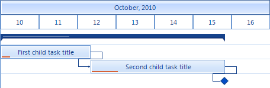

Data binding basics
RadGanttView binds to any object that implements IList, IListSource or IBindingList. This includes generic lists and BindingSource for example.
To make data binding work, minimally you must assign the DataSource property of RadGanttView and the member properties explained below.
TaskDataMember – Set this to the filed that holds the collection of data that will be used to populate the tasks.
ChildMember * – Set this to the name of the field that will be used as Id of each record.
ParentMember * – Set this to the name of the field that will be used to build the hierarchy of tasks.
TitleMember * – Set this to the name of the filed that will be used as title for the tasks.
StartMember * – Set this to the name of the field that will be used as start for the tasks.
EndMember * – Set this to the name of the field that will be used as end for the tasks.
ProgressMember – Set this to the name of the field that will be used as progress of the tasks
LinkDataMember – Set this to the field name that holds the collection of data that will be used to populate the links.
LinkStartMember ** – Set this to the name of the field that will be used as id for the start item of a link.
LinkEndMember ** – Set this to the name of the field that will be used as id for the end item of a link.
LinkTypeMember ** – Set this to the name of the field that will be used to define the type of a link.
- - Marks the members that are the bare minimum to show a gantt with tasks. ** - Marks the members that are required to show links.
The following example demonstrates a sample data with all the code needed to bind and show this data in RadGanttView:
- First we define the schema of the data.
__[C#] __
DataTable tasks = new DataTable("Tasks");
tasks.Columns.Add("Id", typeof(int));
tasks.Columns.Add("ParentId", typeof(int));
tasks.Columns.Add("Title", typeof(string));
tasks.Columns.Add("Start", typeof(DateTime));
tasks.Columns.Add("End", typeof(DateTime));
tasks.Columns.Add("Progress", typeof(decimal));
DataTable links = new DataTable("Links");
links.Columns.Add("StartId", typeof(int));
links.Columns.Add("EndId", typeof(int));
links.Columns.Add("LinkType", typeof(int));
DataSet data = new DataSet();
data.Tables.Add(tasks);
data.Tables.Add(links);
__[VB.NET] __
Dim tasks As New DataTable("Tasks")
tasks.Columns.Add("Id", GetType(Integer))
tasks.Columns.Add("ParentId", GetType(Integer))
tasks.Columns.Add("Title", GetType(String))
tasks.Columns.Add("Start", GetType(DateTime))
tasks.Columns.Add("End", GetType(DateTime))
tasks.Columns.Add("Progress", GetType(Decimal))
Dim links As New DataTable("Links")
links.Columns.Add("StartId", GetType(Integer))
links.Columns.Add("EndId", GetType(Integer))
links.Columns.Add("LinkType", GetType(Integer))
Dim data As New DataSet()
data.Tables.Add(tasks)
data.Tables.Add(links)
- We populate some sample data.
__[C#] __
tasks.Rows.Add(1, 0, "Summary task title", new DateTime(2010, 10, 10), new DateTime(2010, 10, 15), 30m);
tasks.Rows.Add(2, 1, "First child task title", new DateTime(2010, 10, 10), new DateTime(2010, 10, 12), 10);
tasks.Rows.Add(3, 1, "Second child task title", new DateTime(2010, 10, 12), new DateTime(2010, 10, 15), 20m);
tasks.Rows.Add(4, 1, "Milestone", new DateTime(2010, 10, 15), new DateTime(2010, 10, 15), 0m);
links.Rows.Add(2, 3, 1);
links.Rows.Add(3, 4, 1);
__[VB.NET] __
tasks.Rows.Add(1, 0, "Summary task title", New DateTime(2010, 10, 10), New DateTime(2010, 10, 15), 30D)
tasks.Rows.Add(2, 1, "First child task title", New DateTime(2010, 10, 10), New DateTime(2010, 10, 12), 10)
tasks.Rows.Add(3, 1, "Second child task title", New DateTime(2010, 10, 12), New DateTime(2010, 10, 15), 20D)
tasks.Rows.Add(4, 1, "Milestone", New DateTime(2010, 10, 15), New DateTime(2010, 10, 15), 0D)
links.Rows.Add(2, 3, 1)
links.Rows.Add(3, 4, 1)
- We setup and bind RadGanttView to the data
__[C#] __
this.radGanttView1.GanttViewElement.TaskDataMember = "Tasks";
this.radGanttView1.GanttViewElement.ChildMember = "Id";
this.radGanttView1.GanttViewElement.ParentMember = "ParentId";
this.radGanttView1.GanttViewElement.TitleMember = "Title";
this.radGanttView1.GanttViewElement.StartMember = "Start";
this.radGanttView1.GanttViewElement.EndMember = "End";
this.radGanttView1.GanttViewElement.ProgressMember = "Progress";
this.radGanttView1.GanttViewElement.LinkDataMember = "Links";
this.radGanttView1.GanttViewElement.LinkStartMember = "StartId";
this.radGanttView1.GanttViewElement.LinkEndMember = "EndId";
this.radGanttView1.GanttViewElement.LinkTypeMember = "LinkType";
this.radGanttView1.GanttViewElement.DataSource = data;
this.radGanttView1.Columns.Add("Start");
this.radGanttView1.Columns.Add("End");
__[VB.NET] __
Me.RadGanttView1.GanttViewElement.TaskDataMember = "Tasks"
Me.RadGanttView1.GanttViewElement.ChildMember = "Id"
Me.RadGanttView1.GanttViewElement.ParentMember = "ParentId"
Me.RadGanttView1.GanttViewElement.TitleMember = "Title"
Me.RadGanttView1.GanttViewElement.StartMember = "Start"
Me.RadGanttView1.GanttViewElement.EndMember = "End"
Me.RadGanttView1.GanttViewElement.ProgressMember = "Progress"
Me.RadGanttView1.GanttViewElement.LinkDataMember = "Links"
Me.RadGanttView1.GanttViewElement.LinkStartMember = "StartId"
Me.RadGanttView1.GanttViewElement.LinkEndMember = "EndId"
Me.RadGanttView1.GanttViewElement.LinkTypeMember = "LinkType"
Me.RadGanttView1.GanttViewElement.DataSource = data
Me.RadGanttView1.Columns.Add("Start")
Me.RadGanttView1.Columns.Add("End")
